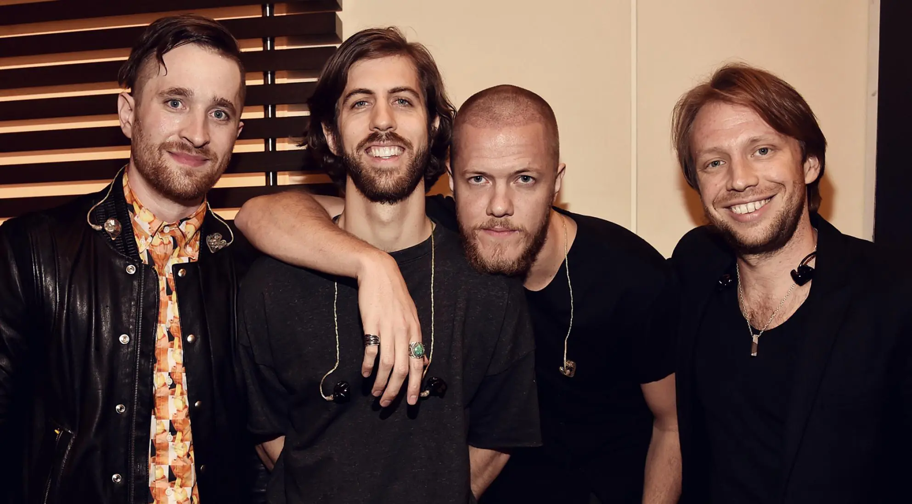

Imagine Dragons

À Propos
Imagine Dragons est un groupe de pop rock américain, originaire de Las Vegas dans le Nevada, et formé en 2008. Avec six albums au total, le groupe totalise 74 millions d’albums vendus et 160 milliards de streams dans le monde entier.
Membres
- Brittany Tolman – piano:chœurs, guitare rythmique (2009–2011)
- Theresa Flaminio — piano, claviers, chœurs (2011)
- Dave Lemke – basse, chœurs (2008–2009)
- Aurora Florence – piano, claviers, chœurs, violon (2008)
- Andrew Beck – guitare, chœurs (2008)
- Daniel Platzman – batterie, percussion, chœurs, guitare rythmique, alto, claviers (2011-2023)
- Dan Reynolds – chant, guitare rythmique, piano, claviers, batterie, percussions (depuis 2008)
- Wayne Sermon – guitare solo, chœurs, mandoline (depuis 2009)
- Ben McKee – basse, chœurs, piano, claviers, synthétiseur (depuis 2009)
- Ryan Walker – piano, claviers, guitare rythmique, mandoline, chœurs, tambourine (Tour member 2012–2017)
- Will Wells – piano, claviers, guitare rythmique, chœurs (Tour member 2015–2017, depuis 2024)
- Elliot Schwartzman – piano, claviers, guitare rythmique, chœurs (Tour member 2017-2022)
- Andrew Tolman – batterie (Tour member depuis 2023)
My favourite song : Thunder